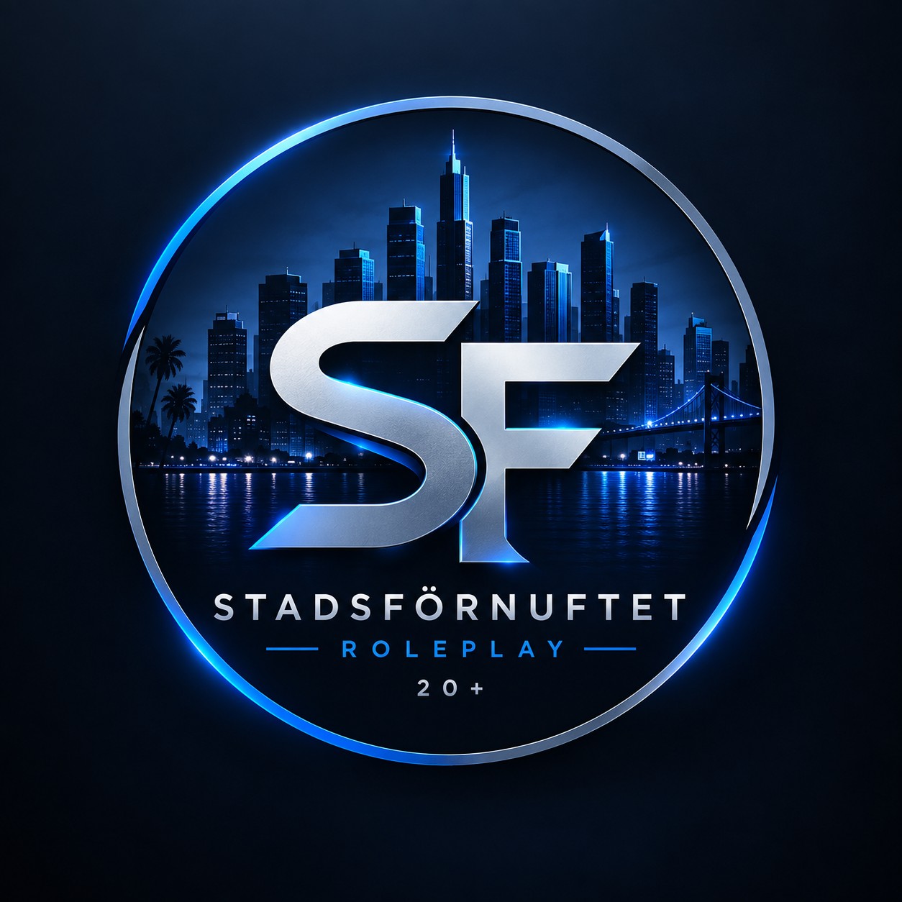

Genomtänkt RP
Fokus på sunt förnuft, konsekvenser och trovärdiga karaktärer.

STADSFÖRNUFTETROLEPLAY 20+FIVEM • SERIÖS ROLEPLAY • 20+
Välkommen till Stadsförnuftet Roleplay 20+ – en modern rollspelsmiljö med fokus på moget bemötande, genomtänkt RP och gemenskap.
VÅR IDENTITET
Stadsförnuftet Roleplay 20+ är en FiveM-server med fokus på seriöst, moget och trovärdigt rollspel.
Fokus på sunt förnuft, konsekvenser och trovärdiga karaktärer.
En 20+ miljö där respekt, tydlighet och bra kommunikation står i centrum.
Jobb, myndigheter, företag och berättelser som formas av spelarna.
Alla spelare skickar in en ansökan som granskas av staff innan de börjar spela.
Skapa rollspel genom olika verksamheter, myndigheter och karaktärsroller.
Tillsammans skapar vi minnesvärda scenarion och en levande RP-miljö.
REGELVERK
Läs igenom reglerna innan du ansöker om whitelist. Genom att spela på servern förväntas du känna till och följa regelverket.
VÅRT TEAM
Möt teamet som arbetar för att skapa en trygg och seriös rollspelsupplevelse på Stadsförnuftet Roleplay.
Serverägare
Ansvarar för serverns utveckling, riktning och framtid.
WHITELIST
Fyll i ansökan nedan. När du skickar in den går ansökan direkt till staff för granskning i vår Discord.
HÄNG MED
Gå med i Discord för nyheter, support, whitelist och kontakt med communityn.
Gå med i Discord